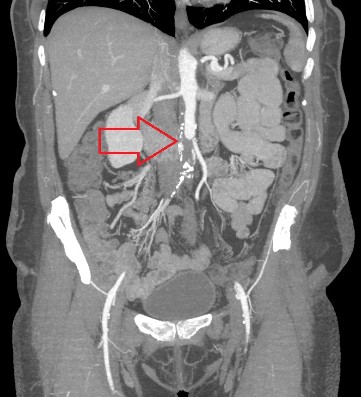

Ficha del catálogo
Enfermedad arterial periférica
- Sistema
- Cardiovascular
- Modalidad
- TC
- Región
- Miembros inferiores
- Dificultad
- Intermedio
Es la obstrucción progresiva de las arterias de las extremidades por aterosclerosis, que reduce la perfusión distal. Se manifiesta como claudicación intermitente y, en fases avanzadas, dolor de reposo, úlceras o gangrena. Los factores de riesgo principales son diabetes, tabaquismo, dislipidemia e hipertensión.
Técnica
La angiotomografía con contraste yodado permite mapear el árbol arterial desde la aorta hasta los pies con un solo bolo, ajustando la velocidad de la mesa al flujo del paciente. El ultrasonido Doppler evalúa segmentos concretos y aporta información hemodinámica con curvas espectrales. El índice tobillo-brazo orienta la gravedad antes del estudio de imagen.
Qué observar
- Placas calcificadas y blandas con el grado de estenosis resultante
- Longitud y localización de las oclusiones segmentarias
- Desarrollo de circulación colateral y reconstitución distal
- Permeabilidad del lecho infrapoplíteo y del arco plantar
- Estado de injertos o endoprótesis previas
- Signos de isquemia tisular: Úlceras, gas, cambios óseos
Hallazgos
Se aprecian placas ateromatosas que estrechan la luz de forma excéntrica o concéntrica, con oclusiones segmentarias que muestran ausencia de opacificación y reconstitución distal por colaterales. En el patrón del diabético predomina la afectación infrapoplítea con calcificación extensa de la media. Las curvas Doppler distales a una estenosis significativa se vuelven monofásicas y de ascenso lento.
Perlas
La calcificación circunferencial densa, muy frecuente en el diabético y en el paciente con enfermedad renal crónica, produce artefacto de endurecimiento del haz que impide graduar la estenosis en tomografía; en ese escenario la información hemodinámica del Doppler o de las presiones segmentarias resulta más fiable que la imagen anatómica.
Diagnóstico diferencial
- Enfermedad venosa crónica
- El dolor mejora al elevar la pierna, hay varices y dermatitis ocre con pulsos conservados.
- Estenosis del canal lumbar
- La claudicación es neurógena, se alivia al flexionar el tronco y no guarda relación fija con la distancia recorrida.
- Tromboangeítis obliterante
- Afecta arterias distales de pacientes jóvenes fumadores, con colaterales en sacacorchos y sin ateromatosis proximal.
- Embolia arterial aguda
- La oclusión es brusca, con menisco proximal, escasa colateralidad y árbol arterial por lo demás sano.
Simuladores
- Artefacto por calcificación densa que aparenta oclusión
- Adquisición demasiado rápida que rebasa el bolo de contraste
- Artefacto metálico de prótesis de cadera o rodilla
Por modalidad
- TC
- Ofrece un mapa anatómico completo del árbol arterial útil para planificar revascularización.
- US
- Aporta información hemodinámica con curvas espectrales y vigila la permeabilidad de injertos sin contraste.
Protocolo
Angiotomografía desde el diafragma hasta los pies con cortes submilimétricos, seguimiento de bolo en aorta abdominal y retraso ajustado al gasto cardiaco. Se emplea inyección bifásica y se reconstruyen proyecciones de intensidad máxima y planos curvos. En calcificación extensa conviene revisar los cortes axiales originales.
Clasificación
La clasificación de Fontaine gradúa de I asintomático a IV con lesiones tróficas, pasando por claudicación y dolor de reposo. La clasificación de Rutherford aporta una escala más detallada de siete categorías útil para estudios comparativos.
Errores frecuentes
- Graduar estenosis en segmentos con calcificación circunferencial densa
- No evaluar el lecho distal y limitar la lectura a los segmentos proximales
- Confundir un artefacto de sincronización del bolo con oclusión real

arteriopatía periférica claudicación aterosclerosis angiotomografía Doppler isquemia estenosis